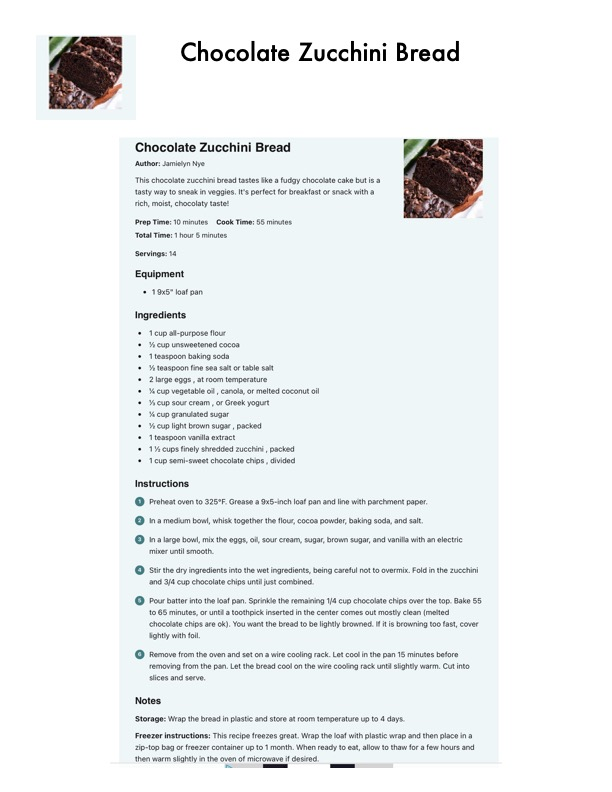

Chocolate Zucchini Bread

Original cookbook page 650
Moist chocolate zucchini bread with semi-sweet chocolate chips. A delicious way to use up garden zucchini. Recipe by Jamielyn Nye.
Prep: 10 minutes • Cook: 55 minutes • Total: 1 hour 5 minutes
Ingredients
- 1 cup all-purpose flour
- ½ cup unsweetened cocoa
- 1 teaspoon baking soda
- ½ teaspoon fine sea salt or table salt
- 2 large eggs, at room temperature
- ⅓ cup vegetable oil, canola, or melted coconut oil
- ½ cup sour cream, or Greek yogurt
- ¼ cup granulated sugar
- ½ cup light brown sugar, packed
- 1 teaspoon vanilla extract
- 1½ cups finely shredded zucchini, packed
- 1 cup semi-sweet chocolate chips, divided
Instructions
- Preheat oven to 325°F. Grease a 9x5-inch loaf pan and line with parchment paper.
- In a medium bowl, whisk together the flour, cocoa powder, baking soda, and salt.
- In a large bowl, mix the eggs, oil, sour cream, sugar, brown sugar, and vanilla with an electric mixer until smooth.
- Stir the dry ingredients into the wet ingredients, being careful not to overmix. Fold in the zucchini and ¾ cup chocolate chips until just combined.
- Pour batter into the loaf pan. Sprinkle the remaining ¼ cup chocolate chips over the top. Bake 55 to 65 minutes, or until a toothpick inserted in the center comes out mostly clean (melted chocolate chips are ok). You want the bread to be lightly browned. If it is browning too fast, cover lightly with foil.
- Remove from the oven and set on a wire cooling rack. Let cool in the pan 15 minutes before removing from the pan. Let the bread cool on the wire cooling rack until slightly warm. Cut into slices and serve.
📝 Recipe Notes
Storage: Wrap in plastic and store at room temperature up to 4 days. Freezer: Wrap with plastic wrap and place in zip-top bag up to 1 month. Uses a 9x5-inch loaf pan.
Recipe #650 from collection